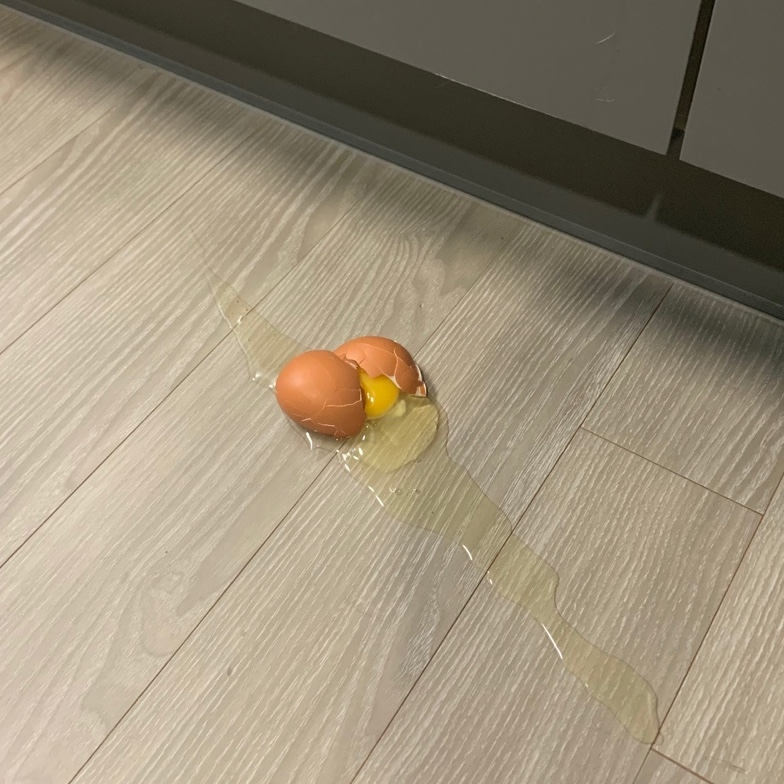
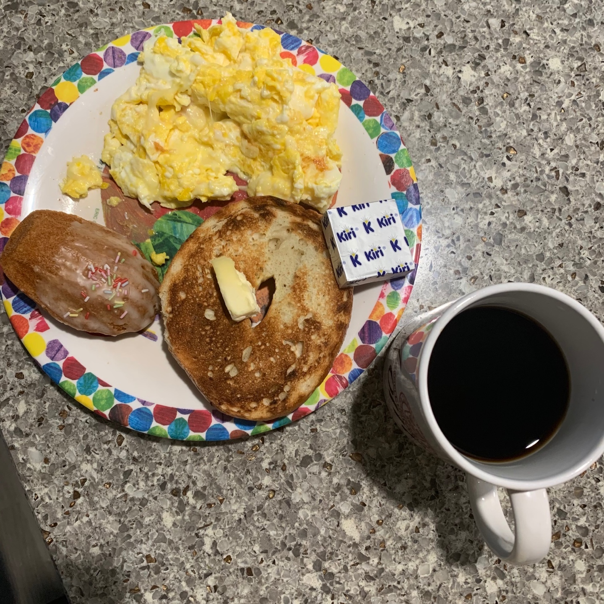
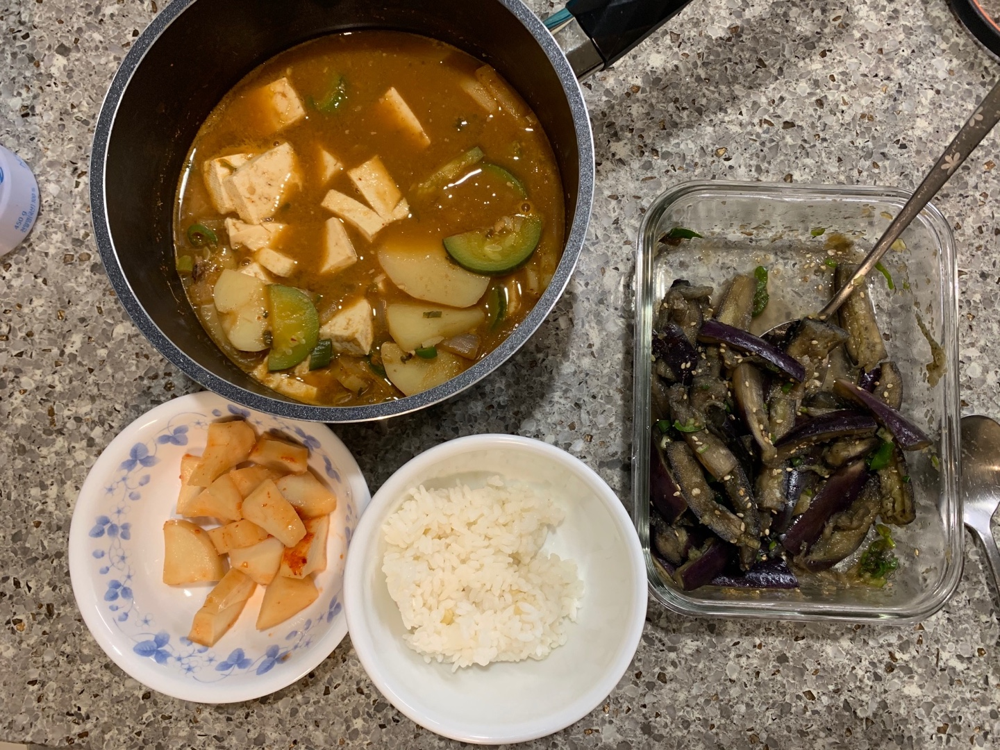
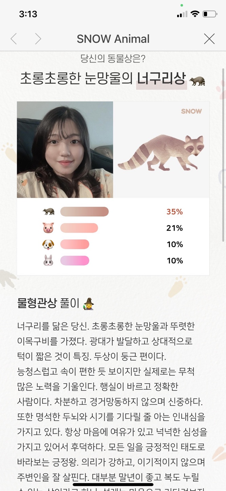
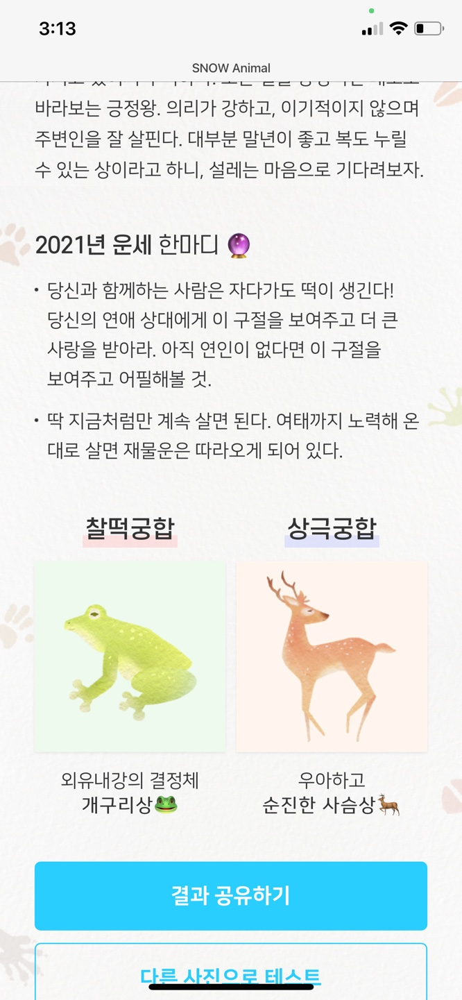
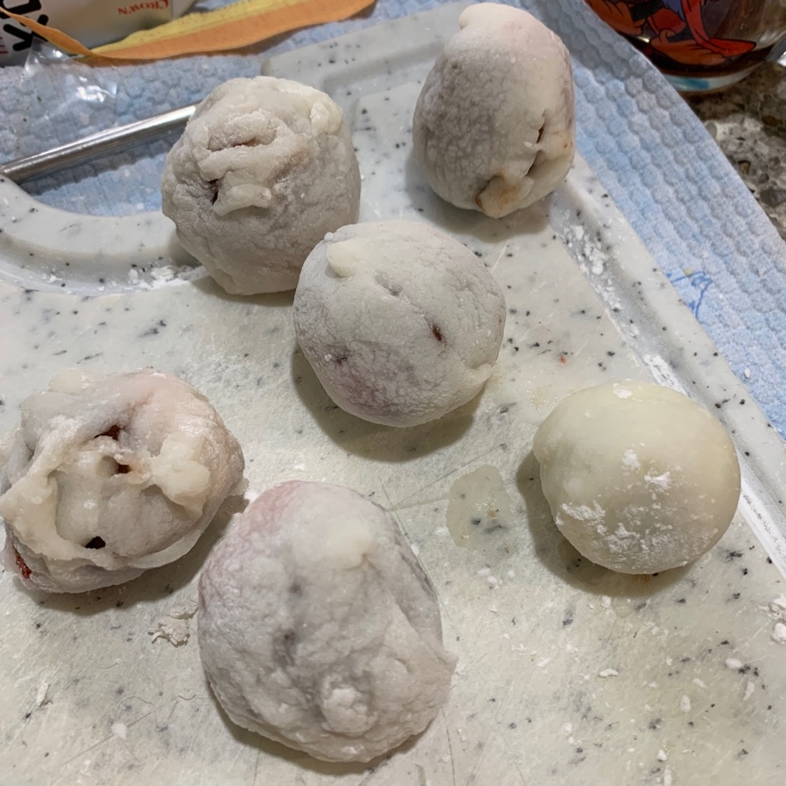
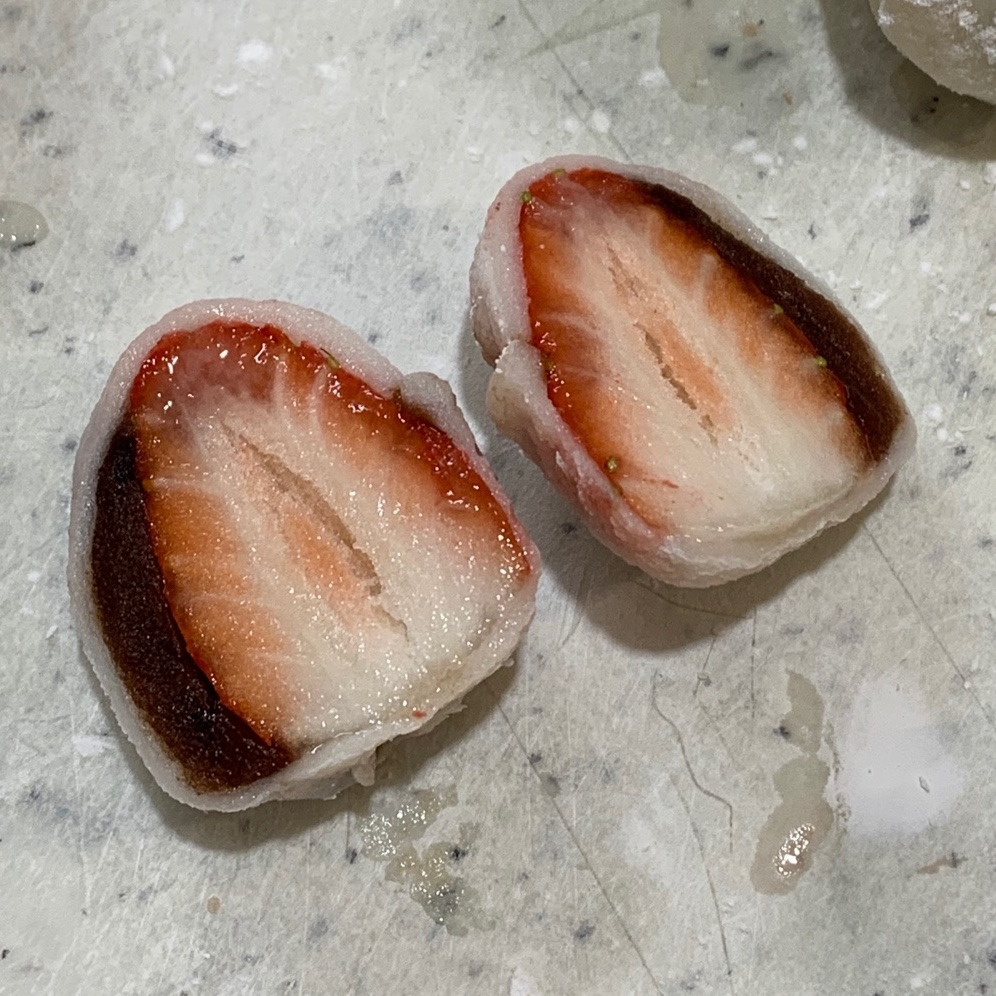

Timeline
 
계란 하나 깨먹었어ㅋㅋㅋㅋㅋㅋㅋㅋ 가스렌지 옆에 계란 두개 놔두고 잠깐 다른거 꺼내는 사이에 하나가 혼자 댕굴댕굴 굴러서 바닥에 붙어버렸네..하하
그 왜 인스타충 짤 중에 뭐 떨어뜨리거나 흘리거나 그러면 일단 사진부터 찍어본다는 그런 짤이 있었던 것 같은데
난 저거 떨어뜨리자마자 아 오늘 보고서에 써야겠다 생각했어 ㅋㅅㅋ
첫 수업 한시간 분량의 개괄하는 내용이었는데도 느꼈어 나는 이 수업을 절대 "듣지" 않을 것이라는 거슬.. 심지어 출석 점수에도 안 들어간다
 가지 너무 맛있어~~~~ 밥 1.5공기 뚞딲
사실 오늘 뒹굴거린 시간이 다른 거 한 시간보다 더 많은 것 같아 ㅋㅋㅋㅋ 편하게 보낸 하루~
뒹굴거리면서 스노우에 동물 관상 봤는데

나 너구리상이래! 신기한 건 나 초등학교 1학년 때부터 별명이 너구리였어 그래서 내 베프를 "너주씨"(너구리 주인)라고 부르고 그 친구는 나 구리구리너구리라고 자주 불렀당
중학교 때도 너구리 닮았다고 그러는 애들 있었고, 대학 와서도 애들이랑 강아지상 고양이상 얘기하다가 나는 너구리상이라고 ㅋㅋㅋㅋㅋㅋ
난 정말 닮은 게 많네..?ㅋㅋㅋㅋㅋ
자다가도 떡이 생긴다니 ! 근데 왜 나는 떡 만드는 거에 소질이 없을까 ㅋ ㅋ ㅋ ㅋ ㅋ ༼;´༎ຶ ༎ຶ`༽
 
돌맹이..... 돌맹이........ 그래 계속 너무 성공하기만 하긴 했어 한 번 쯤은 실패해줘야지... 그럼그럼....
그래도 오늘 만든 된찌랑 가지무침 맛있었으니까 된거야..... ㅜ.....
갈 곳을 잃은 찹쌀가루와 옥수수전분은 다행히 외할머니가 주신 팥죽 걸쭉하게 하는 데 쓰였어 ㅎㅎ..
쑨니한테 카드 자랑했는데 쑨니가 카드 완전 예쁘대! 자기가 산 카드보다 더 예쁘다고 부러워했어 유니크하대 ㅎㅎ
역시 허세님 카드 보는 안목이 훌륭하시네요!